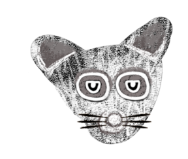

PRECAUCIÓN
Recuerda avanzar y moverte con las flechas
Esc: Nivel superior
Derecha: Siempre regresas
F: Para colocar pantalla completa
Una leyenda de
Leyenda 1
El Origen del
[1/3] Cuentan que cuando el mundo estaba dividido en un mundo vertical y un mundo horizontal, había siete peregrinaciones que vagaban por tierras áridas en busca de comida. Una de las siete tribus, los teochichimecas adoraban a Camaxtli el Dios de la caza y la esperanza.
[2/3] Los teochichimecas eran nómadas que llevaban viajando mucho tiempo y aunque eran valientes, el hambre les había traído desesperación, así que un día le imploraron a Camaxtli que los ayudara. El Dios después de muchos rezos escuchó a su pueblo y luego de un largo camino los guió al Chicomóztoc, un lugar mítico lleno de abundancia.
[3/3] El viento en aquel lugar era fresco, los pastos verdes y abundantes, los ríos eran caudalosos y en la tierra crecía vegetación, entonces se asentaron y con gratitud prometieron que Camaxtli siempre tendría un lugar en su tribu y nunca sería olvidado.
[1/2] Como las hojas que caen de los árboles para volver a florecer, el tiempo trajo nuevas generaciones, sin embargo, año tras año los teochichimecas olvidaron rezar, danzar y rendir tributo a Camaxtli.
[2/2] El Dios al no recibir ningún canto y ofrenda en mucho tiempo, decidió observar qué estaba pasando,pensó que quizá su pueblo estaba tan ocupado prosperando que habían olvidado simplemente hacerlo.
[1/2] Camaxtli abrió el cielo y observó. ¡Entró en cólera! Vió a su pueblo rascándose la panza, comiendo a diestra y siniestra y con una pereza tan grande como su decepción. Con orgullo y firmeza, tomó toda el agua y la tierra la volvió infértil.
[2/2] El verde no fue más y entonces el calor inundó el lugar, se secaron los frutos y árboles y aquello que un día fue un paraíso no lo fue nunca más.
[1/2] Los teochichimecas se sorprendieron, no entendían qué estaba pasando y Camaxtli hizo acto de presencia,
[1/2] con una gran voz desde el cielo les dijo que debían partir, explorar el mundo, buscar un nuevo lugar para vivir pero sobre todo, nunca olvidarlo.
[1/3] A regañadientes la travesía inició, muchos querían aferrarse al lugar que conocieron como hogar, mientras que otros no dudaron en cuanto vieron que no era posible permanecer ahí.
[2/3] Llevaron algunas antorchas para alumbrar por la noche, sin embargo, el camino les deparaba muchas sorpresas. Ahora eran peregrinos como una vez lo fueron sus antepasados.
[3/3] Día tras día cruzaron largos caminos, a veces montañas peligrosas, hubo un día en el que se atrevieron a atravesar un gran desierto, algunos perecieron pero la mayoría continuó. Veredas peligrosas, noches con frío y hambre por doquier, pero ningún sitio en donde habitar.
[1/2] Un peculiar día y después de avanzar quién sabe cuántos kilómetros, treparon por un gran acantilado y cuál fue sorpresa al observar en la lejanía inmensas extensiones de verde vivo.
[2/2] Sus esperanzas regresaron, los teochichimecas se emocionaron, así que fijaron su objetivo. Ese sería el lugar ideal para vivir.
[1/2] Caminaron y caminaron y se percataron que la tierra comenzaba a ser distinta, había maleza por todas partes. Pronto tuvieron frente suyo una inmensa arboleda, el follaje de los árboles parecía cubrir el mismo cielo.
[2/2] La noche comenzó a caer y nuestros amigos teochichimecas comenzaron a escuchar ruidos, aullidos y gruñidos.
[1/2] De la nada un animalito saltó y les dijo que no era seguro permanecer tan noche en aquel sitio, les sugirió que lo acompañaran.
[2/2] Los guío a una cueva para resguardarse, ahí una vez que estuvieron seguros comenzaron a charlar.
[1/3] Asombrados los teochichimecas pudieron verlo mejor; era blanco, tenía el hocico chato, bigotes apenas visibles, ojos pequeños y redondos y orejas diminutas, por ello lo llamaron chiquina por su peculiar tamaño.
[2/3] Los teochichimecas que se habían percatado de las grandes habilidades nocturnas de aquel animalito, le preguntaron qué hacía tan solo ya que también podía ser peligroso para él. El animalito les respondió que hacía tiempo había perdido a su manada intentando atravesar la arboleda.
[3/3] Era pequeño y podía esconderse de los depredadores con facilidad, además de que era un gran corredor, sin embargo, no se atrevía a cruzar solo. Admitió que le daba mucho miedo y que extrañaba a su familia, pero añoraba tener un hogar para vivir sin tener que esconderse.
[1/3] Se conmovieron y le contaron que buscaban donde asentarse, pero sobre todo en donde ser libres, eso los había llevado a encontrarse con él esa noche. El animalito sorprendido les preguntó cómo sabían a dónde debían ir y con emoción respondieron que habían observado desde un acantilado
[2/3] una gran tierra, por eso habían caminado en esa dirección. Su expresión cambió cuando recordaron que al acercarse notaron que los grandes árboles estaban en medio del camino y eran tan grandes que parecía imposible atravesarlos.
[3/3] Era difícil ver por donde pasar, la maleza por todas partes así como el follaje; al grado que la poca luz que entraba desde arriba apenas era suficiente para percibir el camino, por la noche era peor, ni pensar en pasar con las antorchas sin incendiar nada de por medio.
[1/1] Entonces los teochichimecas y su nuevo amigo tuvieron una grandiosa idea, podían complementarse, el animalito podía guiarlos y ellos con la compañía mutua podrían brindarle más seguridad.
[1/2] Se pusieron manos a la obra, el animalito untó barro sobre sus pequeños ojos y también en sus patas para camuflajearse, estiró sus orejas y bigotes para escuchar posibles peligros y guiarse en la oscuridad.
[2/2] El hocico lo jaló hacia adelante para oler con mayor facilidad el camino. Así se adentraron en una travesía desconocida a través de aquella arboleda en busca de su nuevo hogar.
[1/2] Comenzaron a ir a gatas desde el tronco más grande, era visible así que en un inicio no hubo problema, sin embargo, al irse adentrando más y más era difícil no perderse. Con sus patas les indicó que siguieran el rastro de barro, un olor fétido impregnó su paso y pudieron continuar sin mucha dificultad.
[2/2] Los teochichimecas lo siguieron sin descanso. Día trás día una mancha más se sumaba a su pelaje, de tanto estirar su cuello comenzó a alargarse, el barro en sus ojos se hizo duro y su hocico y orejas se extendieron.
[1/1] El animalito que había sentido el inmenso cansancio por todo su cuerpo, vislumbró la salida a lo lejos así que continuo sin descansar. El final del camino estaba cerca, todos sus esfuerzos habían rendido frutos, pronto tendrían un nuevo hogar para vivir, todos.
[1/2] Sin embargo, el animalito con sus últimas fuerzas indicó con sus patas que habían llegado. Los teochichimecas gritaban de emoción cuando de pronto se percataron que su pequeño amigo había quedado rendido en el suelo, había dado su último aliento sin poder mirar que por fin tendría un hogar.
[2/2] El llanto inundó los ojos de todos, no podían creerlo. Lo levantaron y se percataron que ahora tenía las orejas grandes, el hocico puntiagudo, los bigotes largos, el cuerpo manchado y una máscara en su cara.
[1/1] Había hecho un gran sacrificio y en el camino sus orejas y bigotes terminaron de ese tamaño al estirarlos, su cuerpo manchado por la tierra y sus ojos negros por el barro.
[1/1] De pronto escucharon ruidos, los teochichimecas quedaron atónitos cuando descubrieron una manada de animales manchados, con el hocico puntiagudo y máscaras en sus ojos como su amigo. Cayeron en cuenta de que la familia de la que les había contado había llegado a aquel sitio antes que ellos.
[1/1] En honor a su amigo prometieron cuidar a su familia, vivir en conjunto y prosperar como alguna vez lo hicieron sus ancestros. En la lejanía Camaxtli se había hecho presente y con orgullo observó cómo su pueblo había florecido y como el cacomixtle había llegado al mundo.

El fin.
1.- Inicio de leyenda2.- El Sonido del Tiempo